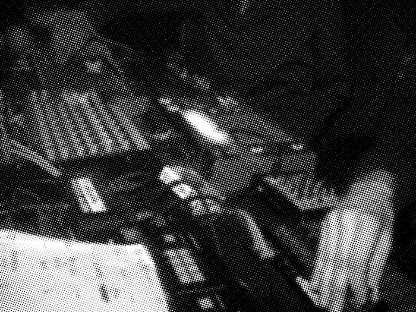

HELP TO OVERCOME CORONA AND SUPPORT AN ENDANGERED SPECIES: MUSICIANS.
LIKE IN EVERY MAJOR CITY, IN DRESDEN THERE ARE NUMEROUS ARTISTS WHOSE EXISTENCE DEPENDS ON PERFORMING REGULARLY. WE KNOW THAT THE CRISIS IS AN ENORMOUS CHALLENGE FOR MANY PROFESSIONS IN THE CULTURAL INDUSTRIES, BUT MUSICIANS ARE PARTICULARLY AFFECTED BY THE CANCELLATION OF EVENTS. WE WANT TO CONTRIBUTE AT LEAST A SMALL PART SO THAT THIS GROUP OF OUR FELLOW HUMAN BEINGS CAN OVERCOME THIS CRISIS.
HILF DABEI, CORONA ZU ÜBERWINDEN UND EINE GEFÄHRDETE SPEZIES ZU UNTERSTÜTZEN: MUSIKER/INNEN.
WIE IN JEDER GROSSSTADT GIBT ES AUCH IN DRESDEN ZAHLREICHE KÜNSTLER, DEREN EXISTENZ VON REGELMÄSSIGEN AUFTRITTEN ABHÄNGT. WIR WISSEN, DASS DIE KRISE FÜR VIELE BERUFE IN DER KULTURWIRTSCHAFT EINE ENORME HERAUSFORDERUNG DARSTELLT, ABER MUSIKER SIND VON DER ABSAGE VON VERANSTALTUNGEN BESONDERS BETROFFEN. WIR WOLLEN ZUMINDEST EINEN KLEINEN TEIL DAZU BEITRAGEN, DASS DIESE GRUPPE UNSERER MITMENSCHEN DIE KRISE ÜBERWINDEN KANN.
€

€
WHAT YOU CAN DO: BUY AND LISTEN TO THE MUSIC! WE HAVE COMPILED A LIST OF SONGS AND TRACKS BY DRESDEN MUSICIANS. WITH THIS IN MIND, BANDCAMP IS A PLATFORM THAT ENSURES THAT AS MUCH OF THE MONEY AS POSSIBLE ACTUALLY REACHES THE ARTISTS. THE LIST IS TO BE CONSTANTLY EXPANDED. SO, CHECK BACK FROM TIME TO TIME.
KEEP YOUR SOCIAL DISTANCE BUT SUPPORT YOUR NEARBY ARTISTS!
WAS DU TUN KANNST: MUSIK HÖREN UND KAUFEN! WIR HABEN LISTEN MIT LIEDERN UND TRACKS VON DRESDNER MUSIKER/INNEN ZUSAMMENGESTELLT. DABEI IST BANDCAMP EINE PLATTFORM, BEI DER BESONDERS VIEL GELD BEI DEN MUSIKER/INNEN ANKOMMT. DIE LISTE SOLL STÄNDIG ERWEITERT WERDEN. SCHAUT ALSO VON ZEIT ZU ZEIT MAL WIEDER VORBEI.
BEWAHRT EUCH EURE SOZIALE DISTANZ, ABER UNTERSTÜTZT DIE KÜNSTLER/INNEN IN EURER NÄHE!
SUPPORT YOUR LOCALS (FREELANCERS, ARTISTS)
KLUBNETZ DRESDEN STARTED A START NEXT CAMPAIGN TO RESCUE THE LOCAL CLUB SCENE. HELP!
SUPPORT THE LOCAL RECORD STORES AND HELP TO GET THROUGH THE CRISIS.
FAT FENDERS, INTER RECORDS & SUBURBAN TRASH INDUSTRIES.
UNTERSTÜTZE DEINE LOCALS (SELBSTSTÄNDIGE, FREISCHAFFENDE, KÜNSTLER/INNEN)
UNTERSTÜTZE DIE LOKALEN PLATTENLÄNDEN UND HILF IHNEN DIE KRISE ZU ÜBERWINDEN.
FAT FENDERS, INTER RECORDS & SUBURBAN TRASH INDUSTRIES.
UNTERSTÜTZE DAS OBJEKT KLEIN A.
DOWNLOAD SOCIAL MEDIA MATERIAL
@
@
IF YOU WANT TO CONTRIBUTE SOME NICE MUSIC DON'T HESITATE TO GET IN TOUCH WITH US: DDMUSICCLUB(AT)UNCANNYVALLEY.DE
ONLY BANDCAMP, APPLE MUSIC OR SPOTIFY LINKS.
WENN DU SCHÖNE MUSIK BEISTEUERN MÖCHTEST, MELDE DICH BEI UNS: DDMUSICCLUB(AT)UNCANNYVALLEY.DE
BITTE NUR BANDCAMP, APPLE MUSIC ODER SPOTIFY LINKS.
€
€